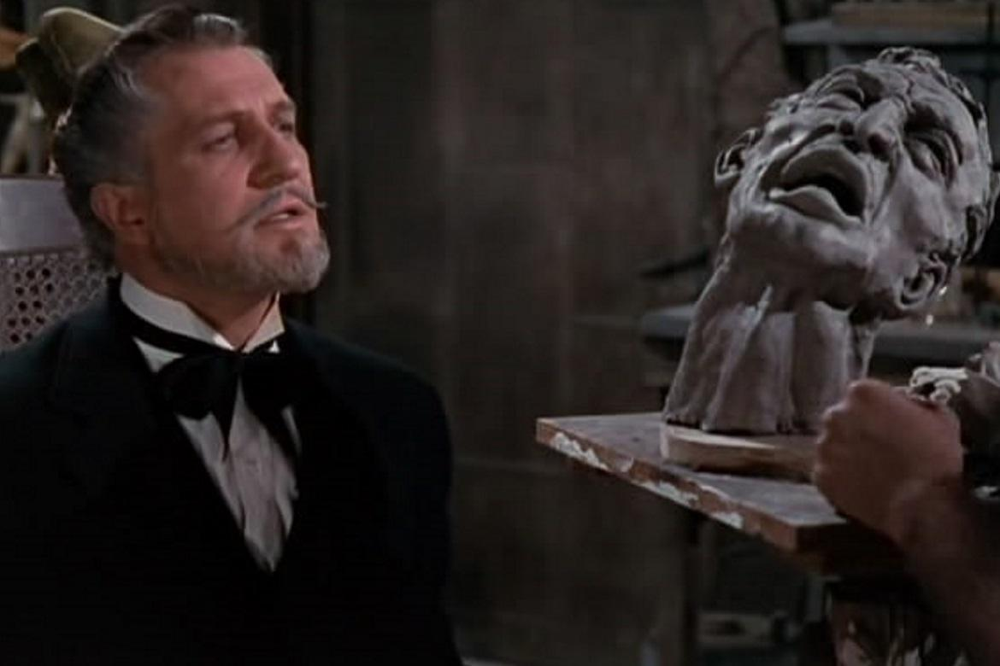

A CASA DE CERA: O CLÁSSICO DO TERROR.
Confira abaixo algumas curiosidades reunidas para relembrarmos a obra prima do filme que assombra as telas desde os anos 2000.
1.REMAKE
O filme é um remake de "Museu de Cera" (1953), que por sua vez é um remake de "Os Crimes do Museu" (1933). Porém vários elementos do roteiro e da trama são totalmente diferentes.
2. CERA

A cera foi utilizada para criar figuras realistas que são centrais para a narrativa de terror. Artistas especializados esculpiram as figuras usando uma mistura de cera e silicone para capturar detalhes minuciosos, como expressões faciais. As estátuas de cera aumentaram o fator de terror ao parecerem incrivelmente reais, e em algumas cenas, dublês foram usados para representar as figuras, intensificando a imersão. Essa técnica contribuiu para a atmosfera sombria do filme, fazendo do museu de cera um cenário assustador e impactante.
3. PARTE DO ELENCO JA HAVIA TRABALHADO JUNTO ANTES

Essa não foi a primeira vez que alguns membros do elenco trabalharam juntos. Na verdade, Padalecki e Chad Michael Murray, que interpretou Nick, estrelaram a série ‘Gilmore Girls’ nos anos 2000. Além disso, Padalecki e Hilton voltariam a colaborar em um episódio de ‘Supernatural’ no mesmo ano de estreia do filme – que inclusive faz menção ao terror.
4. PROCESSO MILIONÁRIO

Durante as filmagens, um incidente grave ocorreu nos estúdios Warner Bros. na Austrália, onde o filme estava sendo rodado. Um incêndio destruiu uma das atrações da companhia, levando a Warner Bros. a abrir um processo de 7 milhões de dólares contra o especialista em efeitos especiais. A causa do incêndio foi atribuída a uma vela acesa que havia sido deixada em um ambiente perigoso, resultando em danos significativos.
5.O QUE TERÁ ACONTECIDO A BABY JANE?

Nas primeiras cenas, a personagem Carly sai para explorar a estranha cidade de Ambrose e acaba entrando no cinema local, onde é exibido o clássico "O Que Teria Acontecido a Baby Jane?" (1962). Essa escolha de filme não é aleatória; tanto a obra de 1962, estrelada por Bette Davis e Joan Crawford, quanto o longa de 2005 abordam temas de irmãos disfuncionais e dinâmicas de dominação e submissão em seus relacionamentos. Essa conexão temática acrescenta uma camada extra de profundidade à narrativa de "A Casa de Cera", estabelecendo um paralelo entre os conflitos apresentados nos dois filmes e ressaltando a tensão psicológica que permeia a história.